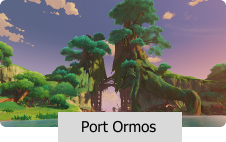
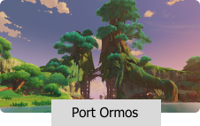

You have arrived in Teyvat — a fantasy world where the seven elements flow and converge.In the distant past,
the Archons granted mortals unique elemental abilities. With the help of such powers, people formed a bountiful
homeland out of the wilderness. However, 500 years ago, the collapse of an ancient civilization turned the
universe upside down.. Though the calamity the world suffered has ceased, peace has yet to be restored.
A city of freedom that lies in the northeast of Teyvat.
From amongst mountains and wide-open plains, carefree breezes carry the scent of
dandelions — a gift from the Anemo God, Barbatos — across Cider Lake to Mondstadt,
which sits on an island in the middle of the lake.
A bountiful harbor that lies in the east of Teyvat.
Mountains stand tall and proud alongside the stone forest, that together with the open plains
and lively rivers make up Liyue's bountiful landscape, which shows its unique beauty through
each of the four seasons. Just how many gifts from the Geo God lie in wait amongst the rocks
of Liyue's mountains?
An Isolated Archipelago Far East of Teyvat. Overcome endless thunderstorms and set foot on
the islands of red maple and cherry blossoms. On winding shores and towering cliffs, and in
forests and mountains full of secrets, witness the Eternity pursued by Her Excellency, the
Almighty Narukami Ogosho.
An Isolated Archipelago Far East of Teyvat. Overcome endless thunderstorms and set foot on
the islands of red maple and cherry blossoms. On winding shores and towering cliffs, and in
forests and mountains full of secrets, witness the Eternity pursued by Her Excellency, the
Almighty Narukami Ogosho.

 
